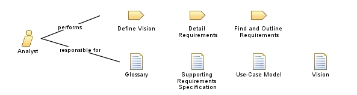

| Role: Analyst |
 |
|
Relationships
 |
||
| Primary Performs | ||
|---|---|---|
| Additionally Performs | ||
| Modifies |
|
|
Staffing
| Skills | An analyst needs the following knowledge, skills, and abilities:
|
|---|---|
| Assignment Approaches | This role can be assigned in the following ways:
|
This program and the accompanying materials are made available under the |